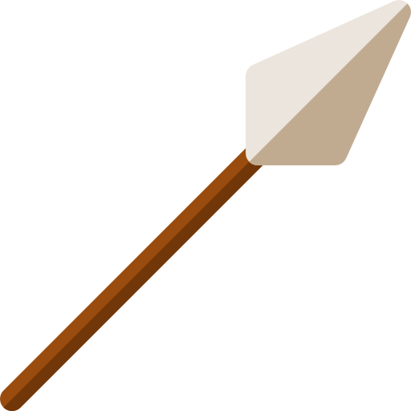
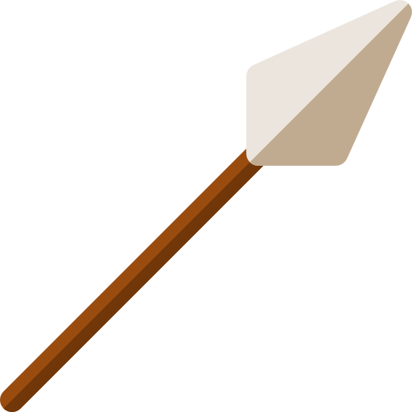

La hache

Le cannon

La catapulte

L'arbalète
La lance

Le fléau

Rodrigo
Chevalier professionnel
Bonjour, moi c'est Rodrigo, je suis né en l'an 485.
Je recherche un emploi dans l'armée en tant que commandant de l’arbalète sacrée
Je possède de multiples compétences en gestion et en stratégie de combat
Merci de me contacter au 01 02 03 04 05
1. Bataille de Vouillé - printemps 507 - Attaquant Francs
2. Siège d'Arles - 507-508 - Défenseur Francs et formation sur l’arbalète
3. Bataille du Mont Badon - 516 - Attaquant bretons sur es saxons
4. Siège de Graven - 518 - Commandant de l'armée gravenienne
La hache
Le cannon
La catapulte
L'arbalète
La lance
Le fléau